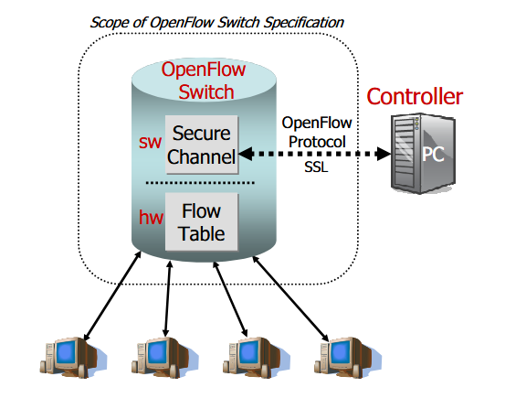
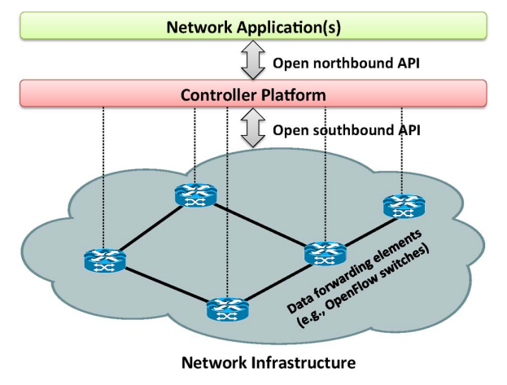

OpenFlow
Trabalho de Redes · EEL879 · UFRJ
Karine Cavalcanti Donato · Julia Silva da Rocha Costa · Joana Moreira Flores
Introdução
Objetivo do trabalho
O trabalho tem como objetivo apresentar o OpenFlow como um recurso que permite aos pesquisadores executar protocolos experimentais em redes utilizadas no dia a dia, como em campus universitários. O interesse é mostrar o quão útil essa especificação pode ser, permitindo que fabricantes desses equipamentos, ao adicionar o protocolo OpenFlow aos switches comerciais, permitam a avaliação de novas ideias sob tráfego real de produção sem a necessidade de expor o funcionamento interno dos dispositivos ou comprometer a rede existente.
Contextualização do OpenFlow
As redes de computadores estão inseridas no funcionamento de empresas, instituições de ensino e dentre outras. Com essas tecnologias e protocolos consolidados, muitos administradores de redes se recusam a executar códigos experimentais em ambientes de produção, dado o risco de causar instabilidade ou interrupções no fornecimento do serviço. Nesse contexto, a falta de possibilidade de testar alternativas sob o tráfego real da rede, como por exemplo novos protocolos e modelos de segurança, cria uma percepção de que a infraestrutura de rede estagnou, dado que há um acúmulo de propostas e ideias não testadas. Embora existam implementações em hardware e software para contornar o problema, nenhuma delas consegue oferecer bom desempenho e baixo custo em redes de larga escala (McKeown et al., 2008). Diante deste cenário, pesquisadores da Universidade de Stanford propuseram o OpenFlow, assumindo um compromisso pragmático focado em quatro objetivos estratégicos:
- Desempenho e Baixo Custo: Aproveitar o hardware que os switches comerciais já possuem internamente, especificamente as tabelas de fluxo (Flow Tables) implementadas em memórias TCAM, para processar pacotes.
- Interface Padronizada e Aberta: Em vez de exigir que os fabricantes abram o seu software proprietário, o OpenFlow define uma interface externa padronizada, o OpenFlow Protocol, e um canal de comunicação seguro, o Secure Channel. Através dessa interface, um software externo, o Controller, pode gerenciar remotamente as regras da tabela de fluxo do switch.
- Isolamento de Tráfego: Garantir que o tráfego de produção da universidade continuasse a ser processado pelo pipeline tradicional de Camada 2/3 do switch, enquanto o tráfego de teste é isolado e gerenciado pelo controlador do pesquisador.
- Respeito ao Modelo Fechado dos Fabricantes: Os fornecedores de hardware podem implementar o protocolo OpenFlow nos seus equipamentos sem precisar expor o código interno dos seus algoritmos nem revelar segredos industriais aos concorrentes.

Relação entre OpenFlow e Redes Definidas por Software (SDN)
As Redes Definidas por Software (SDN) surgiram, assim como o OpenFlow, como experimentos universitários, visando eliminar limitações de infraestruturas de redes mais tradicionais. A principal diferença entre essas estruturas está na arquitetura de controle e na forma como as decisões de tráfego são tomadas. Em uma rede convencional, o plano de controle e o plano de dados ficam acoplados em cada equipamento, de forma distribuída, enquanto nas SDN eles são separados e o controle é centralizado em um software.
| Característica | Rede Convencional | Rede Definida por Software (SDN) |
|---|---|---|
| Plano de Controle vs. Dados | Cada roteador decide individualmente como encaminhar os pacotes. | O plano de controle é removido do hardware e centralizado em um software controlador. |
| Gerenciamento | Configurações são feitas dispositivo por dispositivo. | Toda a rede é gerenciada a partir de um único ponto lógico. |
| Flexibilidade e Agilidade | Alterar políticas de tráfego exige reconfigurar múltiplos equipamentos individualmente. | Regras de tráfego e políticas podem ser alteradas dinamicamente via software em tempo real. |
| Inteligência da Rede | Cada nó possui uma visão limitada da topologia global da rede. | O controlador possui uma visão robusta e atualizada de toda a infraestrutura. |
| Encaminhamento de Dados | Baseado em endereços de destino via tabelas de roteamento locais. | Baseado em regras de fluxos flexíveis definidas pelo controlador. |
| Hardware | Propenso ao uso de equipamentos proprietários com funcionalidades engessadas. | Permite o uso de hardware padronizado/aberto, pois a inteligência está no software. |
| Programabilidade | Automação rígida via scripts externos. | Aplicações de software interagem diretamente com a rede através de APIs. |

As SDN e o protocolo OpenFlow estão extremamente interligados, dado que um complementa o outro. O OpenFlow é o protocolo de comunicação mais amplamente aceito e adotado nesse modelo. Ele define a especificação aberta que permite ao controlador SDN se comunicar diretamente com o plano de dados dos dispositivos para instalar, remover ou modificar regras nas tabelas de fluxo. Ele funciona como um “driver de dispositivo” genérico no modelo SDN. Ele abstrai o hardware do comutador, permitindo que o controlador programe equipamentos de diferentes fabricantes usando um conjunto padrão de instruções. Sua operação é por meio de tabelas de fluxo, compostas por regras de correspondência (match), ações (actions) e estatísticas (stats).